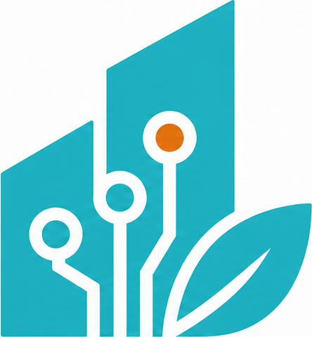
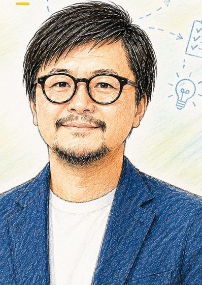

人が足りず、改善に手が回らない
日々の業務で手一杯。 改善の時間も人も取れない。

数十名規模の会社で、「人が足りない」「引き継ぎが回らない」「同じ説明を何度もしている」。 その一つひとつを、現場に入って一緒にほどいていきます。 ツールの導入は、そのあとの話です。
広島県府中市を拠点に、地域企業の現場に入り、 小さく変化をつくります。
日々の業務で手一杯。 改善の時間も人も取れない。
属人化していて、 休むと仕事が止まってしまう。
何度も同じ対応をしており、 時間も気力も削られている。
使いこなせず、 現場に定着しなかった。
どれも、ツールを増やせば解決する話ではありません。 まず、仕事の中身を見せてください。
まず3か月、一つの業務を確実に変える
5名 60,000円〜
実務で使えるAIスキルを、 6つのコースで体系的に学べます。
内容に応じてお見積もり
業務の棚卸し・設計・仕組み化を 個別に支援します。
内容に応じてお見積もり
現場に寄り添い、 活用の定着と成果創出まで伴走します。
10問ほどで、自社のAI活用の現在地が分かります
サービス詳細・事例・料金・お問い合わせはこちら （公開準備中）
AIの説明だけでなく、 現場で使う仕組みまで作れます。
補助金の申請書作成支援の経験もあります。
ツールありきではなく、 仕事の流れから整理します。

広島県府中市を拠点に、 地域企業のAI活用・業務改善を支援。 「現場に入る」ことを大切に、 小さな改善を積み重ねて成果につなげます。
属人化していた業務の手順を整理し、 引き継ぎできる状態にした。
見積作成をテンプレート化し、 担当者以外でも作れるようにした。
問い合わせ対応を、 よくある質問への自動応答で下支えする 仕組みを設計・導入した。
※ 企業が特定できない形にした事例です。
10問ほどの質問に答えるだけで、 自社が今どの段階にいるかが分かります。
そのまま使える指示文（プロンプト）を、 業務別にまとめています。
A. はい。ツールの説明より先に、 現在の業務を一緒に整理するところから始めます。
A. 小さなご相談から対応できます。 本格的な業務改善は3か月を一つの目安としています。
A. 内容や規模によって異なります。 詳しい料金はWebサイトをご確認ください。
10問ほどで、自社の現在地が分かります
サービス詳細・事例・お問い合わせ （公開準備中）